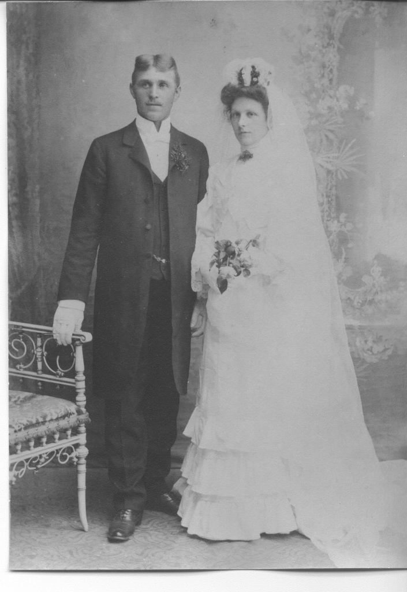
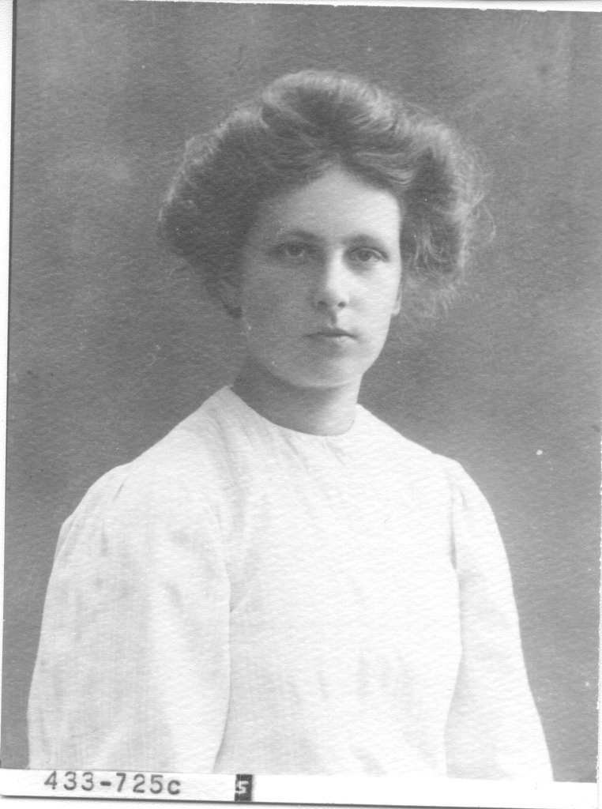

My grandmother, Margit Vanja (Bengtsson) Steele, was the first of nine (9) children born to Carl and Agnes Bengtsson. Margit was born October 28, 1906 in Stormon, a small town outside of Forshaga, Sweden.
The house in Stormon can be found at on Google maps here (59 32' 10.76" N, 13 30' 2.31" E ) - Much of the house has changes over the years but the kitchen is much the same as it was over 100 years ago, including the wood-fired stove and oven.: Google Map location
Carl and Agnes immigrated at the end of the Swedish migration to the US. Carl, Agnes, and baby Margit boarded the White Star Lines S.S. Adriatica in Liverpool, England and landed in New York, in 1908
Here is an abbreviated family tree, showing Margit's family roots back in Sweden.
Click here to download - Bengtsson tree
Here are Carl Bengtsson and Agnes (Olsson) Bengtsson on their wedding day:

And here is the wedding announcement
Margit's mother, Agnes Olsson Bengtsson, in Sweden

Margit's mother, Agnes Olsson Bengtsson
Here are Carl Bengtsson's sisters Axelina and Kristina
Here is grandma Margit (Bengtsson) Steele at my wedding
Excel copy of Bengtsson family tree: Excel file
And here is a portion of the family tree written in Swedish (.pdf): click to download .pdf file
This is the only video I could find of my grandmother. Here she is loving on my sister, Sheri (aka Booi)
An here is a memorial video made for Margit's funeral service:
Grandma Margit Vanja (Bengtsson) Steele at her birth-home in Stormon, Sweden: